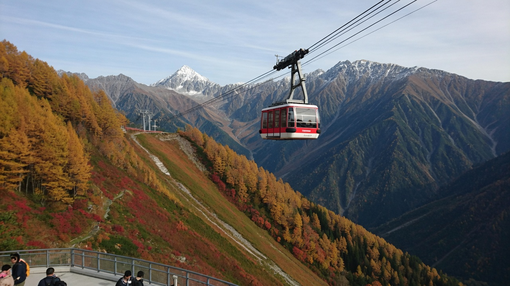

第一程 · 10/1 周四 · 全程 2 小时 20 分
乐桃航空 MM80
06:15PVG 上海浦东 T2
空客 320
无餐食
无餐食
09:35KIX 关西 T2

FINAL · 4 PEOPLE · 2026
机票已买。10/1 乐桃 MM80 浦东→关西；10/8 吉祥 HO1380 成田→浦东。四人，先看山再逛街。
两段航班和 10/2 富山→扇泽贯通票均为 4 人。航班行李额及铁路二维码以各订单页为准。
高铁＋地铁/网约车建议杭州东到上海虹桥约 1 小时，再去浦东约 1–1.5 小时；加候车、换乘，门到门按 3–4 小时。四人交通方式待确认。
酒店班车/网约车 · 10–20 分入住与晚饭约 1 小时，确认次日凌晨去 T2 的车。
约 30 分钟：护照、签证、MM80 订单、托运行李额度、交通卡和手机网络。
明天建议 03:30 左右离店、04:00 前到浦东 T2；出发时刻取决于酒店接驳。

酒店接驳/网约车 · 10–20 分04:00 前到机场办理国际航班手续。
飞机 · 2 小时 20 分机上无餐，起降时间均为当地时间。
步行＋免费摆渡车入境及取箱预留 60–90 分钟；T2 到 T1/Aeroplaza 后步行到关西机场 JR 站，转场另留 20–30 分钟。
JR 特急 HARUKA · 约 50 分此为建议出发窗口，按实际出关时间选车。
THUNDERBIRD＋北陆新干线到敦贺约 1 小时 20 分，换新干线到富山约 1 小时；算上换乘、午餐与等车，约 2.5–3.5 小时。
步行/出租车 · 5–15 分到站时间按当日车次调整；大箱寄新宿并向酒店确认 10/5 收件。
就近吃黑拉面/白虾约 1 小时。确认四人立山票二维码；可按官网规则提前出票，次晨须留取票余量。
步行 · 5–15 分出票机取四人纸票并核对乘车券、日期和二维码，建议 08:00 前到站。
富山地方铁道 · 68 分订单 R26655122，单程 4 人；订单内列有 08:20 出发座位保证项目。
立山缆车 · 7 分09:50 是订单标明的立山站出发时刻，不能当作从富山出发时刻。
立山高原巴士 · 约 50 分排队和上下车另留缓冲，以现场指引为准。
午饭约 30 分钟；池边散步、拍照合计约 1.5–2 小时。天气差则缩短，今日不安排雄山登顶。
电动巴士＋索道＋缆车 · 60–80 分车上时间约 22 分钟，其余为站内步行、排队与换乘；按现场实时班次。
步行 · 约 55 分黑部湖站过坝至黑部水坝站约 15 分钟；观景和拍照再留 30–40 分钟。
电动巴士＋路线巴士约 16 分钟到扇泽；建议衔接 16:05 巴士，约 16:40 到信浓大町。扇泽之后另付。
JR 大糸线 · 约 1 小时具体班次以当日 JR 时刻为准；若山上延误，优先保障末班接驳。

步行 · 5–15 分到松本站买早餐与午间饭团；山路步行按最慢的人安排。
上高地线电车 · 34 分接 08:00 巴士，换乘 11 分钟，事先确认票与站台。
预约优先巴士 · 54 分四人提前订去程及回程。
徒步 · 2–2.5 小时沿步道慢走、拍照，途中视体力调整。
午饭 45–60 分钟；河岸/游客中心轻松游览约 2–2.5 小时。不默认爬烧岳。
巴士 65 分＋电车 30 分15:15–16:20 到新岛岛；16:43 电车、17:13 到松本。巴士回程要预约。
信州荞麦面约 1 小时；同一酒店连住。

上高地线电车 · 34 分08:00 换巴士；出门前查看乘鞍岳道路和班车运行情况。
路线巴士 · 57 分抵达后有约 30 分钟换高原接驳车。
乘鞍岳接驳巴士 · 55 分去回程都是预约优先，提前订妥。
徒步 · 约 2 小时高原观景、短步道、轻食和休息；不安排剑峰登顶。山上寒冷、风大，视天气缩短。
接驳巴士 · 55 分建议预约 12:30 下山车；回到观光中心后约 40 分钟转车。
路线巴士 · 69 分预留 9 分钟换乘 15:25 电车。
上高地线电车 · 30 分傍晚休息、晚饭和整理次日行李；如改晚班，须同步调整前段接驳。

约 45 分钟；之后到松本城步行约 15–20 分钟，也可公交/出租车约 10 分钟。
按实际开门时间入场，天守与外观约 1.5–2 小时；楼梯较陡，入场队伍可能较长。
步行 · 15–20 分午饭 45–60 分钟，然后回酒店/车站取包。
特急 AZUSA 指定席 · 2.5–2.75 小时13:00 是计划窗口，买到车票后以订单时刻替换。
步行/地铁 · 10–25 分领取或确认 10/5 到达的大箱。
约 1–1.5 小时，之后自由休息。

东京地铁 · 20–30 分算进出站与步行约 35–45 分钟，按酒店位置选入口。
衣服和百货约 2.5 小时；按清单集中逛，留试穿时间。
约 1 小时。
地铁银座线 · 15–20 分含步行约 25–35 分钟；若购物较多，可继续留在银座。
约 2–2.5 小时；随后地铁回新宿约 20–30 分钟。
约 1–1.5 小时，避免在山地旅行后安排过多跨城移动。

步行/地铁 · 20–30 分提前 15 分钟到候车处；往返巴士购买后以订单时刻为准。
直达高速巴士 · 1 小时 20 分尚未购票；东名高速施工和堵车需额外缓冲。
约 2.5 小时，先去清单上的重点店。
约 1 小时；富士山视天气看，不单独等云散。
约 3.5 小时。回程上车前 20 分钟到 B 乘车处，确认购物袋和四人都到齐。
直达高速巴士 · 约 2 小时 10 分实际车次与时间以购买页为准，堵车时可能更晚。
约 1 小时，核对航班行李额和次日去成田车票。
步行 · 15–30 分前往车站并找到成田特快站台；早餐带走。
N’EX · 80–90 分车票尚未购买，必须按实际班次核对出发时间和到达站。
目标 11:00 前进入航站楼；值机、安检和午餐留 2 小时以上。
飞机 · 3 小时 5 分有餐；起降时间均为当地时间。
留约 60–90 分钟。别把 15:25 当成能直接上高铁的时间。
包车 2.5–3.5 小时 / 地铁＋高铁约 2.5 小时以实际落地时间和末班车决定。
目标每间 ¥1,000–1,500 / 晚。下列是此前查价记录，不代表现在还能按这个价连住。
T2 步行或 10 分钟车程。4 人 2 间。为 06:15 航班服务。
JR 富山南口步行约 3 分钟。参考约 ¥596 / 间夜。
松本站步行约 2 分钟，靠近巴士总站。参考约 ¥653 / ¥767 / ¥845。
方便去银座、御殿场大巴和 N'EX。国庆约 ¥1,000–1,700 / 间夜。
这条线：关西→富山（特急+新干线）· 立山黑部（专用票）· 松本巴士 · あずさ指定席 · 东京地铁 · N'EX。全国 JR Pass 不划算。IC 卡只解决「刷闸机的短途」，长途票要另买。
| 方案 | 适合这段 | 四人怎么买 | 结论 |
|---|---|---|---|
| 手机西瓜 / ICOCA（推荐） | 东京地铁、JR 普通车、便利店。关西 ICOCA 和东京 Suica 全国互通。 | iPhone 可直接加 Suica/ICOCA，无押金。安卓看机型，不行就买实体卡。 | 先定这个。一人一张，到日本后充 3000–5000 日元。 |
| 实体 Welcome Suica / ICOCA | 不会用手机交通卡的人。Welcome Suica 28 天、无押金、过期不能充。 | 关西机场买 ICOCA；成田/东京买 Suica。全国能互刷。 | 手机加不上再买实体。不要四张 Welcome 卡，回程剩钱难退。 |
| 全国 JR Pass 7 日 | 本行程只有关西→富山、松本→新宿两段长途，用不上全国pass。 | 约 5 万日元/人，远贵过点票。 | 不买。 |
| 只现金 / 只信用卡 | 巴士有的只收现金；地铁窗口慢。 | 每人仍要备现金坐山里巴士。 | 不能当主方案。山里巴士另备现金。 |
四人都要导航、翻译、买票。不要只靠酒店 Wi‑Fi。立山黑部室堂信号可能不稳，下载离线地图。
| 方案 | 速度与覆盖 | 四人成本感 | 结论 |
|---|---|---|---|
| 日本 eSIM × 4（推荐） | SoftBank / au / Docomo 虚拟运营商，城市够用。落地开飞行模式关，开 eSIM。 | 约 8 天 5–10GB/人，天猫、Airalo、Ubigi、携程都能买。四人各一张，互不影响。 | 机子支持 eSIM 就买这个。出发前装好，落地打开。 |
| 关西机场实体卡 × 4 | 和 eSIM 差不多。要排队、换卡、保管小卡。 | 机场溢价。09:35 落地还要赶富山，不想排队。 | 只给不能 eSIM 的安卓备用。 |
| 随身 Wi‑Fi 1 台分享 | 一台电，四人抢。山里没信号时全员一起断。 | 租金看起来便宜，取还柜在关西进、成田出，路线匹配。 | 可以当备份，不要当唯一网。有人走散就没网。 |
| 国内号漫游 | 移动/联通/电信日包，贵，流量少。 | 四人 × 8 天通常比 eSIM 贵一截。 | 只留国内号接验证码，不上网。 |
机票已买，金额以订单为准，下面只估住宿、日本交通和吃饭。4 人 2 间，人均按一半房费算。
富山+松本按已查价；新宿按 ¥1,300 / 间夜 × 3 ÷ 2。浦东那晚另计。
翻山、上高地、乗鞍、あずさ、御殿场大巴、N'EX。关西→富山列车另含在内。
8 天 × 约 ¥220。不含购物和行李超重。
到站就近吃，第一晚早睡。
山里备饭团。
御殿场午餐在奥莱解决。
交通时刻核对：立山黑部 · 上高地 · 乘鞍高原 · 畳平 · 御殿场巴士。车次、天气和预订以当日官方信息与个人订单为准。
2026/9/21 · 四人最终版 · 航班及 10/2 立山黑部交通已购